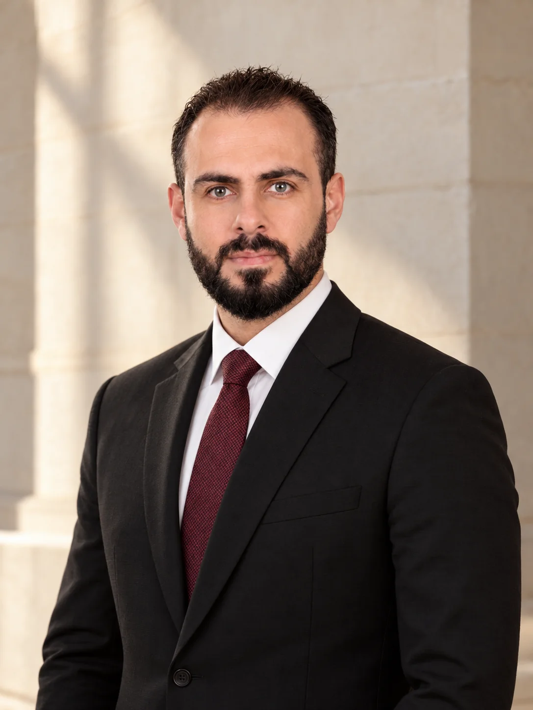

01
القطاع السيادي
الصندوق السيادي السوري
عضو مجلس الإدارة
المساهمة في قيادة الرؤية المؤسسية للاستثمار والتنمية.
من الرؤية إلى العمل؛ مسيرة في إدارة الاستثمار والتطوير العمراني، تستند إلى المسؤولية وتطمح إلى أثرٍ يدوم.
اكتشف المسيرة

O / Bيجمع عبيدة عبد الباقي في مسيرته بين قيادة المؤسسات، وإدارة الاستثمار، والعمل في مشروعات التطوير العقاري والإسكان. تنوّعت مسؤولياته بين القطاعين العام والخاص، مع اهتمام ببناء فرص تنموية ملموسة.
يشغل اليوم عضوية مجلس إدارة الصندوق السيادي السوري، ويرأس مجلس إدارة شركة شام القابضة، مواصلاً العمل على وصل الرؤية الاستراتيجية بالتنفيذ المؤسسي.
استكشف المسيرةمواقع قيادية تربط بين إدارة الأصول والاستثمار، وتطوير المؤسسات، وصناعة فرص المستقبل.
عضو مجلس الإدارة
رئيس مجلس الإدارة
القيادة الحقيقية تبدأ حين تتحول الرؤية إلى أثر يمكن للناس أن يلمسوه.
نهج العملخبرات في الاستثمار والإدارة والتطوير العمراني، عبر مؤسسات ومشروعات متنوعة.
إدارة واستثمار العقارات المملوكة للصندوق السيادي السوري.
وزارة الإدارة المحلية · لمدة عام.
المشاركة في أعمال مجلس الإدارة.
شركة للدعاية والإعلان.
خبرة في مشروعات التطوير العقاري والإسكان والإدارة المحلية.
دراسات تجمع الاقتصاد والسياسة والإعلام، مع تأهيل في التنمية والشؤون الدولية.
للتواصل المهني والفرص الاستراتيجية، يمكنكم مراسلتنا مباشرة.
Obayda.abdulbaky@gmail.com